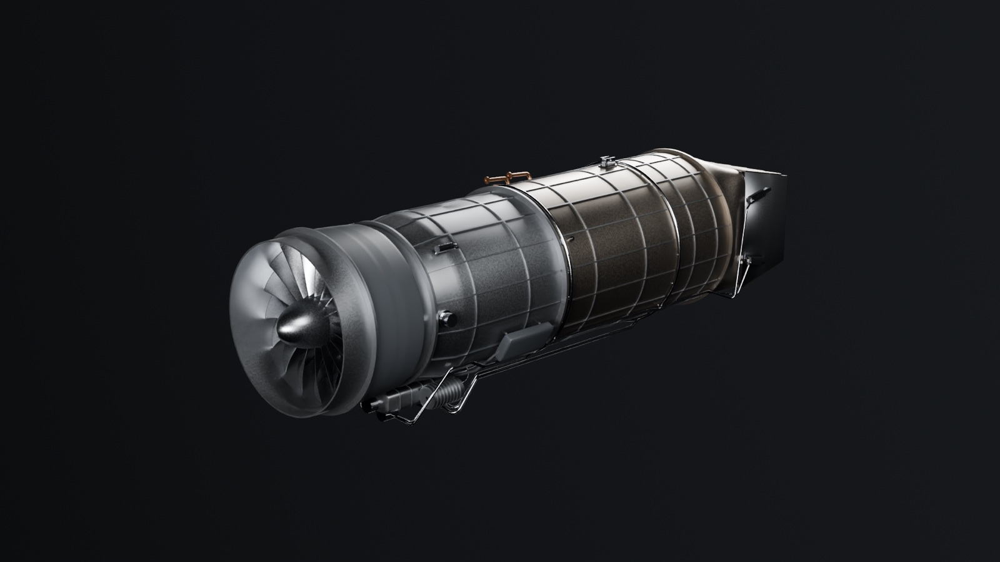

Engine
Aether AX-1
Three-stream adaptive-cycle turbofan with a three-bearing swivel nozzle
- Thrust
- 90.5 kN dry, 134.9 kN reheat
- Overall pressure ratio
- 36.6
- Thrust vectoring
- 0–95° down, ±12° of yaw
- Size
- 4.74 m long, 1.02 m across
- Parts
- 134 named objects, 1,186 airfoils
- Checks
- 120 passing